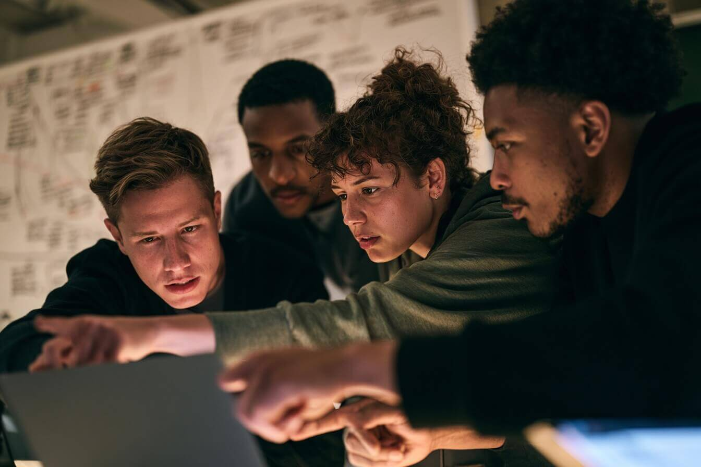

"Team" is a catch-all for a spectrum of very different groupings — each with its own demands on communication, clarity and shared understanding. Before using AI to improve teamwork, work out what kind of team you're actually in.
This course uses three categories to anchor discussion. Most real teams sit somewhere between them — that's exactly what the spectrum activity below is for.
Most work is largely independent. Individuals progress tasks on their own and connect with others only when sharing updates or handing over work. Errors arise from assumptions, incomplete information or unclear expectations.
People work on adjacent or complementary tasks that relate to a shared outcome, but day-to-day progress doesn't depend on continuous interaction. Context can be lost, duplicated or fragmented across channels.

Teams in the agile/scrum or core-project sense: members rely heavily on one another's outputs, sometimes hour to hour, and often can't get work done without deep collaboration. Misunderstandings have immediate impact on delivery.
The communication need varies, but AI supports all three contexts the same way: by reducing ambiguity, structuring information and strengthening shared understanding.
Refine reasoning, detect gaps, rewrite for clarity, and translate complex work into structured formats.
Consolidate updates, summarise distributed conversations, and maintain shared visibility across channels.
Clarify objectives, surface missing information, structure action lists, and reduce cognitive load during fast-moving work.
Place your team on the five-point collaboration spectrum, and note why. You'll group with participants of similar profiles for later activities — so an honest placement makes the whole day more useful.
Where do your teams sit — and why did you characterise them as such?